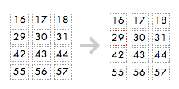
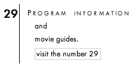

Hello!
 Strong memories and experiences allow us to form connections with people, things and even numbers. I see 83 and i think of the year that i was born, but someone may be thinking of a calculator instead. Pick a number, let's say 303. A child might tell you that it's simply a big number. A nerd might tell you that it's a palindrome. A musician will note that it's also the name of a synthesizer. If we ask the internet, what will it say?
This script poses this same question to the collective mind of the internet (google). What follows is an introduction and then an invitation to visit each number.
Maybe in the process, we find that we agree with the internet, maybe we don't. If we don't, perhaps it's because we have a stronger tie with a number than we might have expected. Perhaps it's because we feel that if given the opportunity, we might have chosen something more important or valid. Even if the internet appears wrong, we can't be sure that we are entirely correct either.
Try your luck here.